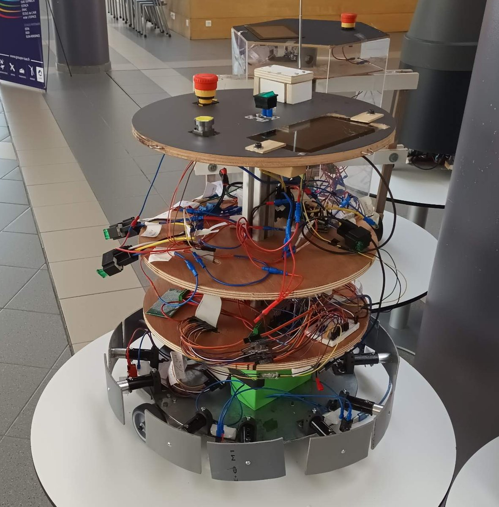

01Contexte
Projet Sciences de l'Ingénieur de 2e année : concevoir et fabriquer de A à Z un robot guide qui suit une ligne au sol pour faire visiter une partie de l'école. Nous travaillions en groupes d'environ 25 élèves, répartis en pôles (mécanique, électronique embarquée, informatique…).

02Mon rôle
J'étais dans le pôle électronique embarquée. J'ai réalisé sous KiCad les schémas électroniques du robot complet.
03Le robot
- Suivi de ligne : le robot suit une bande au sol le long du parcours de visite.
- IHM sur le plateau supérieur : un écran et des boutons pour interagir avec le robot.
- Arrêt d'urgence coup-de-poing, indispensable pour un robot qui circule au milieu des visiteurs.
- Une structure en plusieurs étages qui sépare la motorisation, l'électronique et l'interface.
04Ce que j'en retiens
- Travailler à 25 sur un même système, chaque pôle dépendant du travail des autres.
- Une première expérience de schéma électronique à l'échelle d'un robot complet.